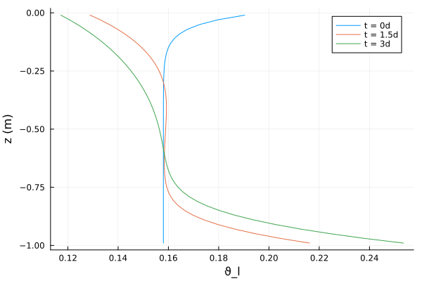
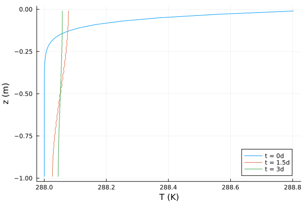

Coupled heat and water equations tending towards equilibrium
The Richards equation tutorial demonstrates how to solve for water flow in soil, without considering heat transfer, phase changes, or the effect of temperature and the effect of ice on the hydraulic properties of the soil.
Here we show how to solve the interacting heat and water equations, in sand, but without phase changes. This allows us to capture behavior that is not present in Richards equation alone.
The equations are:
$\frac{∂ ρe_{int}}{∂ t} = ∇ ⋅ κ(θ_l, θ_i; ν, ...) ∇T + ∇ ⋅ ρe_{int_{liq}} K (T,θ_l, θ_i; ν, ...) \nabla h( ϑ_l, z; ν, ...)$
$\frac{ ∂ ϑ_l}{∂ t} = ∇ ⋅ K (T,θ_l, θ_i; ν, ...) ∇h( ϑ_l, z; ν, ...).$
Here
$t$ is the time (s),
$z$ is the location in the vertical (m),
$ρe_{int}$ is the volumetric internal energy of the soil (J/m^3),
$T$ is the temperature of the soil (K),
$κ$ is the thermal conductivity (W/m/K),
$ρe_{int_{liq}}$ is the volumetric internal energy of liquid water (J/m^3),
$K$ is the hydraulic conductivity (m/s),
$h$ is the hydraulic head (m),
$ϑ_l$ is the augmented volumetric liquid water fraction,
$θ_i$ is the volumetric ice fraction, and
$ν, ...$ denotes parameters relating to soil type, such as porosity.
We will solve this equation in an effectively 1-d domain with $z ∈ [-1,0]$, and with the following boundary and initial conditions:
$- κ ∇T(t, z = 0) = 0 ẑ$
$-κ ∇T(t, z = -1) = 0 ẑ$
$T(t = 0, z) = T_{min} + (T_{max}-T_{min}) e^{Cz}$
$- K ∇h(t, z = 0) = 0 ẑ$
$-K ∇h(t, z = -1) = 0 ẑ$
$ϑ(t = 0, z) = ϑ_{min} + (ϑ_{max}-ϑ_{min}) e^{Cz},$
where $C, T_{min}, T_{max}, ϑ_{min},$ and $ϑ_{max}$ are constants.
If we evolve this system for times long compared to the dynamical timescales of the system, we expect it to reach an equilibrium where the LHS of these equations tends to zero. Assuming zero fluxes at the boundaries, the resulting equilibrium state should satisfy $∂h/∂z = 0$ and $∂T/∂z = 0$. Physically, this means that the water settles into a vertical profile in which the resulting pressure balances gravity and that the temperature is constant across the domain.
We verify that the system is approaching this equilibrium, and we also sketch out an analytic calculation for the final temperature in equilibrium.
Import necessary modules
External (non - CliMA) modules
using OrdinaryDiffEq: ODEProblem, solve, RK4
using DiffEqCallbacks
using Statistics
using PlotsClimaLSM and CLIMAParameters modules
using ClimaCore
import CLIMAParameters as CP
using ClimaLSM
using ClimaLSM.Domains: Column
using ClimaLSM.Soil
import ClimaLSM
import ClimaLSM.Parameters as LSMP
include(joinpath(pkgdir(ClimaLSM), "parameters", "create_parameters.jl"));Choose a floating point precision, and get the parameter set, which holds constants used across CliMA models:
FT = Float64
earth_param_set = create_lsm_parameters(FT);Create the model
Set the values of other parameters required by the model:
ν = FT(0.395);Soil solids are the components of soil besides water, ice, gases, and air. We specify the soil component fractions, relative to all soil solids. These do not sum to unity; the remainder is νssminerals (=0.08, in this case).
ν_ss_quartz = FT(0.92)
ν_ss_om = FT(0.0)
ν_ss_gravel = FT(0.0);Other parameters include the hydraulic conductivity at saturation, the specific storage, and the van Genuchten parameters for sand. We recommend Chapter 8 of Bonan (2019) for finding parameters for other soil types.
Ksat = FT(4.42 / 3600 / 100) # m/s
S_s = FT(1e-3) #inverse meters
vg_n = FT(1.89)
vg_α = FT(7.5) # inverse meters
θ_r = FT(0.0);Other constants needed:
κ_quartz = FT(7.7) # W/m/K
κ_minerals = FT(2.5) # W/m/K
κ_om = FT(0.25) # W/m/K
κ_liq = FT(0.57) # W/m/K
κ_ice = FT(2.29) # W/m/K
κ_air = FT(0.025); #W/m/KThe particle density of organic material-free soil is equal to the particle density of quartz and other minerals (Balland and Arp (2005)).
ρp = FT(2700); # kg/m^3We calculate the thermal conductivities for the solid material and for saturated soil. These functions are taken from (Balland and Arp (2005)).
κ_solid = Soil.κ_solid(ν_ss_om, ν_ss_quartz, κ_om, κ_quartz, κ_minerals)
κ_dry = Soil.κ_dry(ρp, ν, κ_solid, κ_air)
κ_sat_frozen = Soil.κ_sat_frozen(κ_solid, ν, κ_ice)
κ_sat_unfrozen = Soil.κ_sat_unfrozen(κ_solid, ν, κ_liq);Next, we calculate the volumetric heat capacity of dry soil. Dry soil refers to soil that has no water content.
ρc_ds = FT((1 - ν) * 1.926e06); # J/m^3/K
params = Soil.EnergyHydrologyParameters(;
κ_dry = κ_dry,
κ_sat_frozen = κ_sat_frozen,
κ_sat_unfrozen = κ_sat_unfrozen,
ρc_ds = ρc_ds,
ν = ν,
ν_ss_om = ν_ss_om,
ν_ss_quartz = ν_ss_quartz,
ν_ss_gravel = ν_ss_gravel,
vg_α = vg_α,
vg_n = vg_n,
K_sat = Ksat,
S_s = S_s,
θ_r = θ_r,
earth_param_set = earth_param_set,
);We also need to pick a domain on which to solve the equations:
zmax = FT(0)
zmin = FT(-1.0)
nelems = 50
soil_domain = Column(; zlim = (zmin, zmax), nelements = nelems);The boundary value problem in this case requires a boundary condition at the top and the bottom of the domain for each equation being solved. These conditions can be on the state (ϑ_l or T), or on the fluxes (-K∇h or -κ∇T). In the case of fluxes, we return the magnitude of the flux, assumed to point along ẑ. And, in each case, the boundary conditions are supplied in the form of a function of auxiliary variables p and time t.
Water boundary conditions:
surface_water_flux = FluxBC((p, t) -> eltype(t)(0.0))
bottom_water_flux = FluxBC((p, t) -> eltype(t)(0.0));The boundary conditions for the heat equation:
surface_heat_flux = FluxBC((p, t) -> eltype(t)(0.0))
bottom_heat_flux = FluxBC((p, t) -> eltype(t)(0.0));We wrap up all of those in a NamedTuple:
boundary_fluxes = (;
water = (top = surface_water_flux, bottom = bottom_water_flux),
heat = (top = surface_heat_flux, bottom = bottom_heat_flux),
);We aren't using any sources or sinks in the equations here, but this is where freeze/thaw terms, runoff, root extraction, etc. would go.
sources = ();Lastly, we can create the EnergyHydrology model. As always, the model encodes and stores all of the information (parameters, continous equations, prognostic variables, etc) which are needed to turn the PDE system into a set of ODEs, properly spatially discretized for the domain of interest.
soil = Soil.EnergyHydrology{FT}(;
parameters = params,
domain = soil_domain,
boundary_conditions = boundary_fluxes,
sources = sources,
);
soil_ode! = make_ode_function(soil);Set up the simulation
We can now initialize the prognostic and auxiliary variable vectors, and take a peek at what those variables are:
Y, p, coords = initialize(soil);
Y.soil |> propertynames
p.soil |> propertynames
coords |> propertynames(:z,)Note that the variables are nested into Y and p in a hierarchical way. Since we have the vectors handy, we can now set them to the desired initial conditions.
function init_soil!(Y, z, params)
ν = params.ν
FT = eltype(Y.soil.ϑ_l)
zmax = FT(0)
zmin = FT(-1)
theta_max = FT(ν * 0.5)
theta_min = FT(ν * 0.4)
T_max = FT(289.0)
T_min = FT(288.0)
c = FT(20.0)
@. Y.soil.ϑ_l =
theta_min +
(theta_max - theta_min) * exp(-(z - zmax) / (zmin - zmax) * c)
Y.soil.θ_i .= FT(0.0)
T = @.(T_min + (T_max - T_min) * exp(-(z - zmax) / (zmin - zmax) * c))
θ_l = Soil.volumetric_liquid_fraction.(Y.soil.ϑ_l, ν)
ρc_s = Soil.volumetric_heat_capacity.(θ_l, Y.soil.θ_i, Ref(params))
Y.soil.ρe_int .=
Soil.volumetric_internal_energy.(Y.soil.θ_i, ρc_s, T, Ref(params))
end
init_soil!(Y, coords.z, soil.parameters);Updating the auxiliary to the initial state is not necessary, because the first step of the ode_function is to update the auxiliary state. However, we want to plot the initial state in this tutorial, so we update it here.
update_aux! = make_update_aux(soil)
update_aux!(p, Y, FT(0.0));
t0 = FT(0)
timeend = FT(60 * 60 * 72)
dt = FT(30.0);We use OrdinaryDiffEq.jl for carrying out the time integration. By default, it only returns Y and t at each time we request output (saveat, below). We use a callback in order to also get the auxiliary vector p back:
saved_values = SavedValues(FT, ClimaCore.Fields.FieldVector)
cb = SavingCallback(
(u, t, integrator) -> copy(integrator.p),
saved_values;
saveat = 0:43200:timeend,
)
prob = ODEProblem(soil_ode!, Y, (t0, timeend), p);
sol = solve(prob, RK4(); dt = dt, saveat = 0:43200:timeend, callback = cb);Extract output
z = parent(coords.z)
t = parent(sol.t)
ϑ_l = [parent(sol.u[k].soil.ϑ_l) for k in 1:length(t)]
T = [parent(saved_values.saveval[k].soil.T) for k in 1:length(t)];Let's look at the initial and final times:
plot(ϑ_l[1], z, xlabel = "ϑ_l", ylabel = "z (m)", label = "t = 0d")
plot!(ϑ_l[4], z, label = "t = 1.5d")
plot!(ϑ_l[end], z, label = "t = 3d")
savefig("eq_moisture_plot.png");
plot(T[1], z, xlabel = "T (K)", ylabel = "z (m)", label = "t = 0d")
plot!(T[4], z, xlabel = "T (K)", ylabel = "z (m)", label = "t = 1.5d")
plot!(T[end], z, xlabel = "T (K)", ylabel = "z (m)", label = "t = 3d")
savefig("eq_temperature_plot.png");
Analytic Expectations
We can determine a priori what we expect the final temperature to be in equilibrium.
Regardless of the final water profile in equilibrium, we know that the final temperature T_f will be a constant across the domain. All water that began with a temperature above this point will cool to T_f, and water that began with a temperature below this point will warm to T_f. The initial function T(z) is equal to T_f at a value of z = z̃. This is the location in space which divides these two groups (water that warms over time and water that cools over time) spatially. We can solve for z̃(T_f) using T_f = T(z̃).
Next, we can determine the change in energy required to cool the water above z̃ to T_f: it is the integral from z̃ to the surface at z = 0 of c θ(z) T(z), where c is the volumetric heat capacity - a constant here - and θ(z) is the initial water profile. Compute the energy required to warm the water below z̃ to T_f in a similar way, set equal, and solve for T_f. This results in T_f = 288.056, which is very close to the mean T we observe after 3 days, of 288.054.
One could also solve the equation for ϑ_l specified by $∂ h/∂ z = 0$ to determine the functional form of the equilibrium profile of the liquid water.
References
- Bonan, G. Climate change and terrestrial ecosystem modeling. Cambridge University Press, 2019.
- Balland and Arp, J. Environ. Eng. Sci. 4: 549–558 (2005)
This page was generated using Literate.jl.